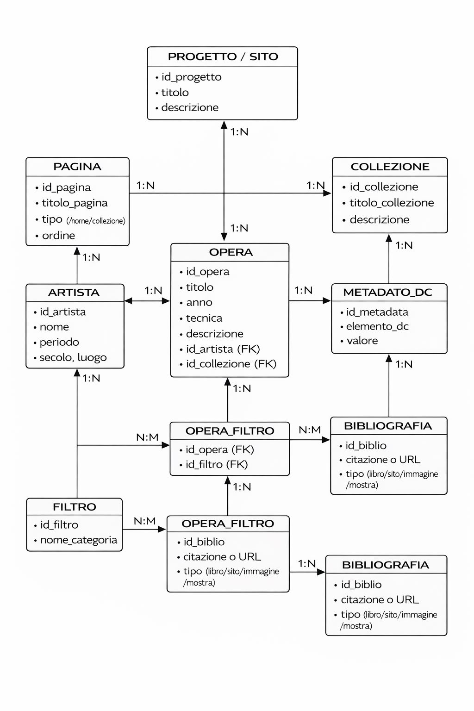
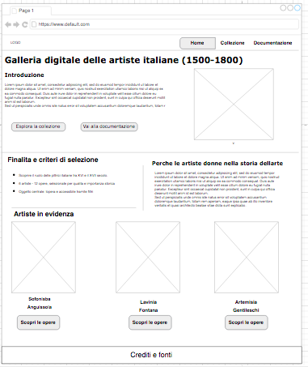
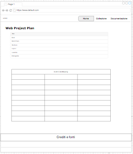

Web Project Plan
Il progetto nasce dalla volontà di creare una galleria digitale dedicata esclusivamente alle artiste donne, con l’obiettivo di offrire uno spazio di visibilità a figure storicamente marginalizzate nella narrazione tradizionale della storia dell’arte.
La scelta di concentrarsi sulle artiste italiane attive tra il XVI e il XVIII secolo risponde a una duplice esigenza: da un lato valorizzare un patrimonio artistico spesso poco conosciuto, dall’altro sottolineare come il contesto culturale italiano sia ricco di presenze femminili di grande rilievo, nonostante la loro frequente esclusione dai canoni ufficiali.
Il progetto intende quindi proporre una risorsa web accessibile e strutturata, che unisca contenuti culturali e strumenti digitali, permettendo l’esplorazione delle opere attraverso metadati, filtri e schede descrittive. La galleria si configura come uno spazio di consultazione, studio e divulgazione, pensato per restituire centralità alle artiste e favorire una lettura più inclusiva del patrimonio artistico.
1.1 Finalità e obiettivi
La finalità principale del progetto è realizzare una galleria digitale dedicata alle artiste italiane attive tra il XVI e il XVIII secolo, con l’obiettivo di valorizzare il loro contributo storico-artistico e offrire uno spazio di consultazione strutturato e accessibile. Il progetto intende proporre una selezione coerente di opere rappresentative, organizzate attraverso un modello uniforme di metadati che permetta una navigazione intuitiva tramite filtri e ricerca. L’obiettivo non è solo espositivo, ma anche didattico e critico: favorire una riflessione sulla presenza femminile nella storia dell’arte e restituire visibilità a figure spesso marginalizzate nei canoni tradizionali.
1.2 Contenuti e ambito disciplinare
L’ambito disciplinare di riferimento è la storia dell’arte, con particolare attenzione alla pittura italiana tra Cinquecento e Settecento. Il contenuto principale della galleria consiste in immagini di opere pittoriche, accompagnate da schede descrittive e metadati strutturati (titolo, artista, data, tecnica, tema, luogo di conservazione, diritti). Le opere sono organizzate in un dataset in formato JSON, che consente una modellizzazione coerente dei dati e garantisce la possibilità di ampliamento futuro. Il progetto si configura quindi come una raccolta digitale di oggetti culturali strutturati secondo criteri omogenei.
1.3 Pubblico di riferimento
Il pubblico di riferimento è eterogeneo. In primo luogo, studenti di storia dell’arte e discipline umanistiche, docenti e ricercatori interessati al tema della rappresentazione femminile. In secondo luogo, utenti non specialisti, appassionati di arte e persone interessate alla storia delle donne. Il sito è pensato come una risorsa digitale accessibile sia in ambito accademico sia in ambito divulgativo, capace di coniugare rigore scientifico e chiarezza espositiva.
1.4 Modalità di comunicazione e accesso
Il principale mezzo comunicativo del progetto è l’immagine, accompagnata da testi sintetici ma informativi. La struttura del sito privilegia una comunicazione visiva chiara, un linguaggio accessibile e una navigazione facilitata tramite filtri e collegamenti interni. Dal punto di vista tecnico, la risorsa è progettata per essere multipiattaforma e responsive, garantendo una fruizione efficace sia da desktop sia da dispositivi mobili, in linea con le attuali modalità di consumo dei contenuti digitali.
2.1 Benchmark 1 – Enciclopedia delle Donne
(https://www.enciclopediadelledonne.it)
Il primo riferimento analizzato è l’Enciclopedia delle Donne, una piattaforma digitale dedicata alla valorizzazione delle figure femminili nella storia, nella cultura e nella società. La similitudine principale con il mio progetto risiede nell’intento culturale: entrambe le risorse nascono con l’obiettivo di restituire visibilità a donne storicamente marginalizzate nei canoni ufficiali. Dal punto di vista strutturale, l’Enciclopedia delle Donne adotta un’organizzazione basata su schede biografiche corredate da testo informativo e, in alcuni casi, immagini. Il modello è prevalentemente testuale, con un forte orientamento alla documentazione e alla narrazione biografica. Rispetto al mio progetto, la differenza principale riguarda il focus disciplinare: mentre l’Enciclopedia copre ambiti molto ampi (politica, scienza, letteratura, arte), la mia galleria si concentra specificamente sulle artiste italiane tra XVI e XVIII secolo, adottando una struttura più delimitata e curatoriale.
Dal punto di vista tecnologico, entrambe le piattaforme condividono: • una struttura web basata su HTML per l’organizzazione dei contenuti; • un’interfaccia orientata alla consultazione; • l’utilizzo di immagini e testi informativi come elementi centrali.
Tuttavia, il mio progetto introduce un elemento strutturale differente: la modellizzazione dei dati tramite dataset JSON e l’uso di filtri dinamici implementati in JavaScript, che permettono una navigazione interattiva e non solo sequenziale.
2.2 Benchmark 2 – Esquimalenator (WordPress Gallery)
(https://esquimalenator.wordpress.com)
Il secondo riferimento analizzato è una galleria digitale ospitata su piattaforma WordPress, caratterizzata da una forte centralità dell’immagine. La struttura richiama un modello espositivo: l’utente accede a una serie di immagini organizzate visivamente, con possibilità di selezione e approfondimento. La similitudine con il mio progetto riguarda principalmente l’impostazione visiva: anche nella mia galleria l’immagine rappresenta il punto di accesso principale all’opera, e la navigazione avviene attraverso una griglia visiva di oggetti culturali. Dal punto di vista del design, questa tipologia di sito mette in evidenza l’impatto visivo e l’immediatezza della consultazione, elementi che ho ritenuto importanti e che ho cercato di integrare nel mio layout attraverso una struttura a card e una disposizione a griglia.
A livello tecnologico, la piattaforma WordPress utilizza un CMS preconfigurato con template e plugin per la gestione delle immagini e dei contenuti. Il mio progetto, invece, è stato sviluppato senza CMS, utilizzando: • HTML per la struttura delle pagine; • CSS per la progettazione dell’interfaccia; • JavaScript per la gestione dinamica dei filtri e del caricamento dei dati; • JSON per l’organizzazione strutturata delle opere. Questa scelta comporta una maggiore consapevolezza progettuale e un controllo diretto sulla modellizzazione dei dati.
2.3 Confronto e motivazioni progettuali
Entrambi i siti analizzati condividono con il mio progetto l’obiettivo di valorizzare contenuti culturali attraverso il web e l’integrazione di immagini e testi informativi. Tuttavia, il mio progetto si colloca a metà tra una piattaforma enciclopedica e una galleria espositiva: da un lato mantiene una struttura documentaria con metadati strutturati, dall’altro privilegia un accesso visivo e curatoriale. A differenza di un CMS preconfigurato, la scelta di sviluppare la galleria tramite HTML, CSS, JavaScript e dataset JSON consente una maggiore trasparenza nella gestione dei dati e una modellizzazione coerente degli oggetti culturali.
Il progetto è stato supportato dalla definizione di una struttura concettuale e logica chiara, rappresentata attraverso uno schema ER e un diagramma di flusso. Lo schema ER visualizza l’organizzazione dei dati e le relazioni tra le entità principali (opera, artista, metadati), evidenziando la modellizzazione del dataset in formato JSON. Il diagramma di flusso, invece, rappresenta il funzionamento dinamico del sito, illustrando il processo di caricamento dei dati, l’applicazione dei filtri e la navigazione verso la scheda opera. Questi strumenti progettuali hanno permesso di garantire coerenza strutturale, chiarezza semantica e una gestione ordinata delle informazioni.
Diagramma di flusso

Schema ER / Struttura dei dati
Il layout del sito è stato progettato secondo un modello chiaro, coerente e gerarchico, ispirato all’architettura dei musei digitali contemporanei. La struttura prevede un header fisso con navigazione principale, un’area centrale dedicata ai contenuti e un footer informativo unificato. La homepage privilegia un approccio introduttivo e curatoriale, con una sezione hero e un accesso rapido alle artiste. La pagina “Collezione” adotta una struttura a due colonne: una sidebar laterale per i filtri dinamici e una griglia responsive di opere organizzate in card visive. La scheda opera presenta invece un layout verticale centrato, con immagine principale in evidenza, metadati strutturati e sezione dedicata alla localizzazione. L’interfaccia è responsive, con griglie flessibili che si adattano ai dispositivi mobili, e utilizza una palette cromatica pastello e una gerarchia tipografica elegante per garantire leggibilità, equilibrio visivo e coerenza estetica.
Wireframe Home
Wireframe Collezione

Wireframe Scheda Opera

Wireframe Web Project Plan
L’usabilità del sito è stata progettata secondo principi di chiarezza, coerenza visiva e accessibilità. L’interfaccia adotta un design pulito in stile “museo digitale”, con una struttura gerarchica chiara: header con navigazione principale (Home, Collezione, Documentazione), contenuto centrale organizzato per sezioni e footer informativo. La navigabilità è semplice e intuitiva: dalla Home si può accedere direttamente alla collezione o alla documentazione; nella pagina Collezione i filtri (secolo, artista, tecnica, tema e ricerca libera) permettono un’esplorazione dinamica del dataset; ogni opera è collegata a una scheda dedicata, garantendo una struttura di navigazione gerarchica ma sempre reversibile. Il sito è responsive e progettato per essere consultabile sia da desktop sia da dispositivi mobili, con griglie flessibili e ridisposizione verticale degli elementi su schermi ridotti. Dal punto di vista tipografico, è stata scelta una combinazione tra un font serif elegante per i titoli (Playfair Display) e un serif leggibile per il corpo del testo (Source Serif / Inter), creando un equilibrio tra autorevolezza accademica e leggibilità digitale. La palette cromatica utilizza tonalità pastello e neutre (avorio, verde salvia, sabbia), ispirate agli ambienti museali, con contrasti moderati per non affaticare la lettura. I bottoni e gli elementi interattivi mantengono coerenza cromatica e feedback visivo al passaggio del mouse, migliorando l’esperienza utente. L’organizzazione visiva privilegia spazi bianchi, card strutturate e gerarchie tipografiche evidenti, facilitando la comprensione dei contenuti e l’orientamento all’interno del sito.
Il sito integra diversi strumenti di browsing e interazione che migliorano l’esperienza dell’utente e valorizzano il dataset digitale. La navigazione avviene attraverso menu principale, collegamenti interni tra pagine e filtri dinamici nella sezione Collezione. I principali strumenti di browsing includono filtri per secolo, artista, tecnica e tema iconografico, oltre a una ricerca libera per parola chiave, che permette un’esplorazione mirata della collezione. L’interazione è supportata da elementi dinamici sviluppati in JavaScript, che consentono il caricamento dei dati da file JSON e l’aggiornamento in tempo reale dei risultati senza ricaricare la pagina. Ogni opera è collegata a una scheda dedicata che funge da nodo informativo approfondito, con metadati strutturati, descrizione storico-artistica, fonti e diritti. Il sito non integra strumenti di annotazione collaborativa o visualizzazioni avanzate (come timeline o grafici), poiché l’obiettivo principale è stato garantire chiarezza strutturale e coerenza semantica dei dati; tuttavia, la struttura del dataset è progettata in modo scalabile, consentendo future implementazioni di visualizzazioni comparative, mappe cronologiche o strumenti di analisi tematica. In questo senso, il progetto privilegia un modello di consultazione chiaro e didattico, fondato su metadati interoperabili e navigazione strutturata.
Immagini (risorse multimediali) — Wikimedia Commons / upload Wikimedia.
Tutte le immagini utilizzate nel sito provengono da Wikimedia Commons (o da upload.wikimedia.org) e vengono riutilizzate nel rispetto delle condizioni di licenza indicate nella pagina del file (Public Domain / Creative Commons). Per ogni opera sono riportati nel sito i crediti (source / imageCredit) e l’indicazione dei diritti (rights).
- Lavinia Fontana, La famiglia Gozzadini (1583): https://commons.wikimedia.org/wiki/File:Lavinia_Fontana,_La_famiglia_Gozzadini,_1583.jpg
- Fede Galizia, Giuditta con la testa di Oloferne: https://commons.wikimedia.org/wiki/File:Fede_Galizia_-_Giuditta_con_la_testa_di_Oloferne.jpg
- Sofonisba Anguissola, Autoritratto al cavalletto (1556): https://commons.wikimedia.org/wiki/File:Sofonisba_Anguissola,_Selvportr%C3%A6t_ved_staffeliet,_1556,_Museum_Castle_in_%C5%81a%C5%84cut.jpg
- Fede Galizia, Natura morta con alzata di pere: https://commons.wikimedia.org/wiki/File:Fede_galizia,_natura_morta_con_alzata_di_pere.jpg
- Lavinia Fontana, Autoritratto (1579): https://commons.wikimedia.org/wiki/File:Lavinia_fontana,_autoritratto,_1579,_su_rame.jpg
- Lavinia Fontana, Portrait of a Pregnant Woman, Possibly a Self-Portrait: https://commons.wikimedia.org/wiki/File:Lavinia_Fontana_-_Portrait_of_a_Pregnant_Woman,_Possibly_a_Self-Portrait.jpg
- Rosalba Carriera, Self-portrait: https://commons.wikimedia.org/wiki/File:Rosalba_Carriera_Self-portrait.jpg
- Rosalba Carriera, Portrait of young woman (Gallerie dell’Accademia, Venezia): https://commons.wikimedia.org/wiki/File:(Venice)_Portrait_of_young_woman_by_Rosalba_Carriera_-_Gallerie_Accademia.jpg
- Elisabetta Sirani, Venus and Cupid (Sotheby’s): https://commons.wikimedia.org/wiki/File:Elisabetta_Sirani_195_Sotheby%27s,_Venus_and_Cupid.webp
- Elisabetta Sirani (ritratto): https://commons.wikimedia.org/wiki/File:Elisabetta_Sirani.jpg
- Elisabetta Sirani, Autoritratto (Museo Puškin): https://upload.wikimedia.org/wikipedia/commons/e/e7/Elisabetta_Sirani_Autorretrato_Museo_Pushkin_Moscu.jpg
- Artemisia Gentileschi, Susanna (1622): https://commons.wikimedia.org/wiki/File:Artemisa_Susanna_1622.jpg
- Sofonisba Anguissola, The Chess Game (1555): https://commons.wikimedia.org/wiki/File:The_Chess_Game_(Sofonisba_Anguissola)_1555_(4096x3236px).jpg
- Artemisia Gentileschi, Judith and Maidservant (Detroit Institute of Arts): https://commons.wikimedia.org/wiki/File:Artemisia_Gentileschi_Judith_Maidservant_DIA.jpg
Fonti testuali (informazioni su artiste e opere).
Le informazioni storico-artistiche presenti nelle schede (item) e nella documentazione sono state ricavate tramite consultazione di repertori enciclopedici e schede di riferimento (voci dedicate alle artiste, contesto storico-artistico, dati essenziali sulle opere). Le fonti vengono citate nel campo source e/o nella sezione “Fonti” della scheda opera, distinguendo tra fonte dell’immagine e fonte del testo.
Strumenti per browsing e interazione.
Il sito è sviluppato con HTML5 e CSS3 per struttura e stile, JavaScript per caricamento dati e filtri di ricerca/browsing, e JSON come formato per il dataset dei metadati. Per la documentazione (Web Project Plan) sono stati utilizzati componenti Bootstrap (navbar, dropdown, accordion, table responsive). Per i test in locale è stato usato un server locale (es. SimpleHTTPServer su porta 8000), mentre la pubblicazione avviene tramite GitHub Pages.
Dublin Core mapping
Il dataset del progetto è stato strutturato secondo un modello interoperabile ispirato allo standard Dublin Core Metadata Initiative (DCMI), al fine di garantire coerenza descrittiva, riusabilità e interoperabilità dei dati.
| Campo dataset | Dublin Core | Esempio |
|---|---|---|
| title | dc:title | Giuditta con la testa di Oloferne |
| artist | dc:creator | Artemisia Gentileschi |
| year / century | dc:date | 1614 |
| themes | dc:subject | Eroine bibliche |
| technique | dc:format | Olio su tela |
| source / imageCredit | dc:source | Wikimedia Commons |
| rights | dc:rights | Pubblico dominio |
| description | dc:description | Descrizione storico-artistica dell’opera |